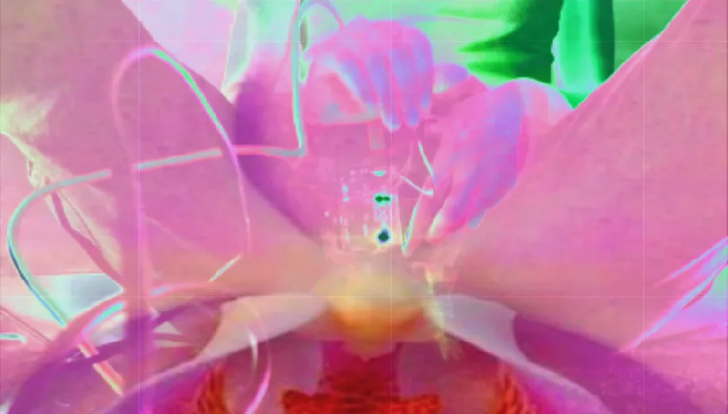

Cinekids
Interactive installation, 2026
BPMaxxing is a physical multiplayer game made for the Cinekids Festival in Amsterdam, responding to the festival’s theme of togetherness.

Transitions
Performance, 2026
“Transitions” is a performative exploration of identity and belonging, weaving Venezuelan manduco and Basque arina-arina dance into a narrative of cultural in-betweenness. Through movement, garment and technology, the work reclaims the body as a site of radical self-expression, navigating the tension of never being “enough” of one culture. A journey from alienation to empowerment, where dance becomes a tool for reappropriation and freedom.

Coccinellidae
Video installation, 2025
A room becomes a garden of thoughts, ladybugs, aphids, flies, embody protection, anxiety, and overwhelm as the narrator navigates loneliness, panic, and the slow return to healing, while quietly critiquing mental health care system.

The light from a void
Performance, 2026
A sensory labyrinth performance exploring intuition, memory and the emotional vulnerability of losing narrative structure.

Ecosenda
Artistic residency · video, 2025
Artistic Residency by the student program Ecosenda at Kotla Jarve, Estonia.

Baby precolombino
Ceramics and electronic music
I imagine a society where past Venezuelan indigenous tribes had access to advanced technology. Inspired by pre-Columbian Venezuelan ceramics, specifically the “Standing Female Anthropomorphic Rattle Figurine”, and traditional instruments like the marimbola. I blend ancestral heritage with futuristic aesthetics.

Cyberfeminism
Performance, 2025
Exploring the role of women in technology, questioning the words of “mother-board” while blending with an intimate journey through the female body and natural sounds.

100 days of Hydra
Live coding, 2025
Through daily live coding visuals, Anabel Miryana confronts coding through image creation. The project is a digital mirror aiming to explore and play with geometry and color, blending the real world.

Sensing bodies
Video performance, 2024
This video performance explores the intimacy I have with technology, where interacting with it transforms it into a being that also interacts with me, creating a feedback loop that entangles me inside of this shibari of wires.

New mirrors for Venezuela
Illustration, 2024
New mirrors for Venezuela emerges from a process of researching my visual heritage. The project questions how culture and tradition are shaped, appropriated, and manipulated by power. Under authoritarian narratives, history is simplified into heroic myths dominated by male figures, used to legitimize and empower those in control, while women are erased.